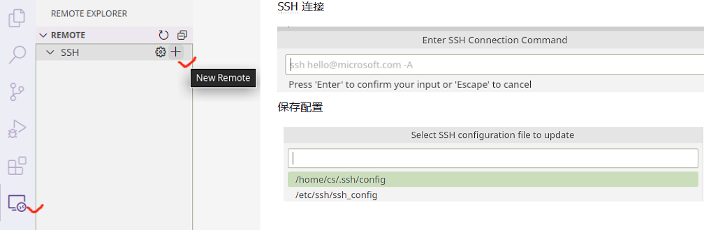
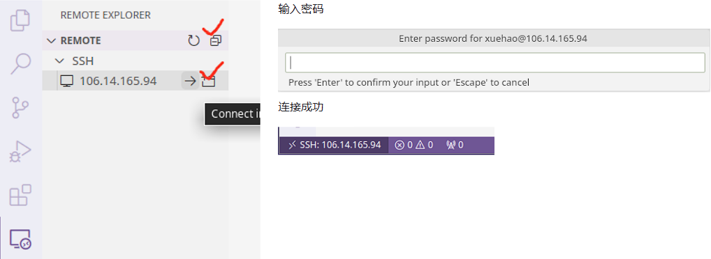

前言
计算机科学教学的前两年，重点是训练你的编程方法和抽象思维能力。在斯坦福大学成功的教学经验中，这两个任务分别由 CS106A 和 CS106B 两门课完成。在 StickMind 课程规划中，这两个任务由 CS101 课程完成，选用 C++ 编程语言。未来也可能会推出现代 C 语言版本的 CS101，敬请期待。
编程方法学的重点是将程序写对，能够利用逐步求精等基本策略，将稍大一些的程序进行分解。这类课程一般会设置一些小游戏或者文本处理，只要求程序能够正确运行即可。抽象思维的重点则是将程序写好，利用一些经典的数据结构和算法，你可以解决一些更为复杂的问题。这类课程不仅要求你把程序写对，更要求你能够高效地解决问题。
经过这些前置课程的训练，你基本能够掌握以下一些能力：
- 了解 Python/C++/Java 基本语法
- 会用递归思维解决问题
- 理解数据抽象并能够实现经典的抽象数据类型（链表、栈、堆、集合、映射）
- 理解并能够实现经典算法（搜索、排序、回溯、哈希）
作为一名程序员，你也应该具备良好的软件工程能力，能够编写组织良好、可读性强的代码。
本课程在计算机科学教学中充当了承上启下的作用。这类课程一般以“计算机组成原理”或“计算机系统基础”冠名。前者偏重硬件，会涉及到 CPU 的内部细节，甚至会要求你设计一个 CPU 模拟器；而后者则偏重软件，以软件开发者的视角抽象看待硬件，不会在硬件层面花费太多精力。本课程倾向于后者，继续提升你的编程技术，在广度和深度上拓展你的编程经验。
本课程将从 C 语言开始，逐步深入到底层汇编语言，一步步带你梳理计算机的运行机制。当完全理解计算机如何执行程序并操作数据时，你将会成为一名更高效的程序员，特别是在处理调试问题、性能优化、内存管理以及程序健壮性方面。只有理解程序是如何运行的，你才能更好地理解 Python/C++/Java 这些高级语言的底层执行逻辑，才能更快地学习其他编程语言进行开发。
本文档是《CS102：计算机组成与系统》课程伴侣，章节规划大致和课程计划同步。大部分内容取材自《深入理解计算机系统》和《C 程序设计语言》两本教材，如有雷同，纯属故意。技术类书籍在没有掌握的情况下阅读，往往效率低下。通过课程、讲义或手册的形式，将一些核心的概念打磨清楚后再去看书，不仅可以节省大量宝贵的时间，还能真正领会字里行间的深意。所以，本书也可以作为上述两本教材的上手指南。
目标
本课程的目标是让学生掌握
- 以复杂的内存和指针方式编写 C 程序
- 对地址空间以及 C 程序的编译/运行时行为，能够建立一个准确的模型
获得以下能力
- 把 C 语言转换到 x86-64 汇编语言
- 编写适配硬件算术局限性的程序
- 识别程序瓶颈并提高运行时性能
- 在 Linux 环境中开发程序
贯穿整个课程，最终会带你揭开计算机基础架构的奥秘。
试听
CS102：计算机组成与系统（试听版）包含前 4 个话题的录播剪辑。试听版仅提供录播内容，不提供任何答疑、作业、批改等服务。试听平台限制课程人数为 500 人，象征性收取 1 元，保留更多名额给有需要的同学。
Linux 介绍
本章通过一些基本概念介绍 Linux 的开发环境。首先，我们会讨论 Linux 基金会；然后，介绍一些流行的 Linux 发行版。最终目的是希望大家能够选择一款合适的发行版，作为日常开发的必备工具。
Linux 历史
Linux 是一种开源计算机操作系统，最初是在基于英特尔 x86 的个人计算机上开发的。随后，它被移植到了一系列其他硬件平台上，从小型嵌入式设备到世界上最大的超级计算机。
1991 年，Linus Torvalds 还是芬兰赫尔辛基的一名学生。当时他开始了一个项目：编写自己的操作系统内核。他还收集并开发了以内核为中心的整个操作系统所需的其他基本组件。没过多久，该项目就被命名为 Linux 内核，并最终发展成为对当今世界产生巨大影响的项目。
1992 年，Linux 通过 GNU（自由软件基金会 FSF 的一个项目，推广免费软件）使用 GPL 许可，这使它能够建立一个全球开发者社区。通过将内核与 GNU 项目中的其他系统组件相结合，许多其他开发人员创建了名为 Linux 分发版的完整系统，该系统首次出现在 90 年代中期。
90 年代中期创建的 Linux 发行版完全免费，为计算提供了基础，并成为开源软件运动的推动力。1998 年，IBM 和 Oracle 等大公司宣布支持 Linux 平台，并开始了一系列重大的开发工作。
Linux 基金会
Linux 基金会（LF）是一个非营利性技术联盟，负责托管和促进开源软件项目的协作开发。除了提供一个可以保护和加速 Linux 内核开发的中立组织之外，LF 还致力于围绕开源项目构建一个可持续的生态系统，以加速技术开发和商业应用。
Linux 基金会项目对世界基础设施至关重要，包括 Linux、Kubernetes、Node.js、ONAP、PyTorch、RISC-V、SPDX、OpenChain 等。Linux 基金会专注于利用最佳实践，满足贡献者、用户和解决方案提供商的需求，为开放协作创建可持续的模型。
三大主流 Linux 发行版家族
最具代表性的几个发行版家族有：
- Red Hat 系统家族（包含 CentOS 和 Fedora）
- SUSE 系统家族（包含 openSUSE）
- Debian 系统家族（包含 Ubuntu 和 Linux Mint）

参见：The LWN.net Linux Distribution List
Linux 基金会发布的软件都会保持发行版兼容性，这意味着这些软件几乎可以在所有的现代发行版中无差别运行。不同发行版之间可能仅仅是包管理器、软件版本、文件位置之间有些许差异。掌握任何一个发行版的使用后，都可以很快地迁移到另一个。
Red Hat 系统家族
Red Hat Enterprise Linux（RHEL）家族包括 Fedora，Rocky Linux 和 Oracle Linux 在内的系列产品。
Fedora 与 RHEL 有着密切的关系，并且包含的软件比 Red Hat 的企业版多得多。其中一个原因是，一个多元化的社区参与了 Fedora 的构建，其中许多贡献者并不为 Red Hat 工作。此外，它还被用作未来 RHEL 版本的测试平台。
由于 CentOS 8 在 2021 年之后不再更新，Rocky Linux 挑起了大梁，目的是提供一个由社区驱动的企业版 RHEL。
关于 Red Hat 家族的一些信息：
- Fedora 是 RHEL 的上游测试平台
- Rocky Linux 是 RHEL 的克隆
- 支持多个硬件平台
- 使用基于 RPM 的 dnf 包管理器来安装、更新和删除系统中的包
- RHEL 在企业中有着广泛的使用。
SUSE 系统家族
SUSE Linux Enterprise Server (SLES)/openSUSE 的关系和 RHTL/Fedora 很相似。
关于 SUSE 家族的一些信息：
- SLES 是 openSUSE 的上游
- 使用基于 RPM 的 zypper 包管理器来安装、更新和删除包
- 包括用于系统管理目的的 YaST 应用程序。
- SLES 广泛应用于零售业等其他行业
Debian 系统家族
Debian 发行版是 Ubuntu 和 Linux Mint 等其他几个发行版的上游，通常用于服务器和台式计算机。Debian 是一个纯粹的开源社区项目（不属于任何公司），并且非常注重稳定性。
Debian 为所有 Linux 发行版的用户提供了迄今为止最大、最完整的软件仓库。Ubuntu 旨在提供长期稳定性和易用性之间的良好折衷。由于 Ubuntu 的大部分软件包都来自 Debian 的稳定分支，继承了 Debian 的超大软件仓库。本课程将基于 Ubuntu 22.04 LTS 发行版进行学习。
关于 Debian 家族的一些信息：
- Debian 家族是 Ubuntu 的上游，Ubuntu 是 Linux Mint 和其他版本的上游
- 使用基于 DPKG 的 APT 包管理器来安装、更新和删除包
- Ubuntu 已被广泛用于云部署
- 虽然 Ubuntu 是在 Debian 之上构建的，并且是基于 GNOME 的，但它在视觉上与标准 Debian 以及其他发行版上的界面不同
Linux 命令行
Linux 发行版通常提供多种不同的图形桌面环境，极大地方便了不同用户的使用习惯，但是 Linux 系统真正强大的确实命令行。本课程建议大家选择一款流行的桌面环境，将更多的精力放在命令行的学习上，而不是放在五花八门的桌面环境定制上。
从今天开始，通过命令行工具和你的 Linux 系统进行交互，并一直走下去。真正的 Linux 系统管理员也是花费了大量的时间在命令行的工具上，通过文本界面自动化一些任务，解决一些问题。有句话是这么说的，“图形用户界面让简单的事情变得更简单，而命令行界面让困难的任务变得可能”。Linux 系统严重依赖大量的命令行工具，这些工具有以下一些优点：
- 没有 GUI 开销，对硬件要求更友好
- 几乎所有的任务都能够通过命令行完成
- 可以为一些常见的任务定制命令脚本自动完成
- 可以在任何地方通过网络连接远程 Linux 服务器
- 图形界面在不同的发行版中会有差异，但命令行的使用却是通用的
实验 0：上手 Linux 开发环境
本课程开发环境选用远程 Linux 云端服务器和命令行工具，搭配本地终端和 VS Code 即可完成所有练习。
本次实验将带大家练习远程开发的流程，实验结束后，你应该能够连接上课程的远程服务器，并能够使用终端命令，搭配 VS Code 进行代码编辑。
❓FAQ 为什么使用远程服务器进行开发？
如果回到上个世纪 80 年代，即使电脑就在你的面前，你也必须使用终端才能对计算机进行操作。现如今，随着个人计算机的发展，虽然图形界面早已成熟，但在真实的开发场景中，使用终端开发仍然占据主导地位。大量的前后端框架、开源项目、开发工具，也严重依赖终端操作。
本课程尽量还原类似的真实开发场景。当你以后有机会去软件公司实习时，你会发现，在这里掌握的技能，将会给你带来极大的回报。
登录课程云服务器
服务器 IP 地址为 106.14.165.94，在任何支持 ssh 命令的计算机终端1上输入如下命令。
- Window 11 已搭载 Windows Terminal
- Linux/macOS 内置 Terminal
ssh YourName@106.14.165.94
第一次使用会弹出确认信息，输入 yes 后紧接着输入服务器用户密码（输入过程中，密码不会显示），成功后的输出信息如下。
The authenticity of host '106.14.165.94 (106.14.165.94)' can't be established.
ED25519 key fingerprint is SHA256:LHvn4qDvTdM1+GcJtG2f+uywxDA2JSys.
This key is not known by any other names
Are you sure you want to continue connecting (yes/no/[fingerprint])? yes
Warning: Permanently added '106.14.165.94' (ED25519) to the list of known hosts.
YourName@106.14.165.94's password:
Welcome to Ubuntu 22.04.1 LTS (GNU/Linux 5.15.0-52-generic x86_64)
查看服务器信息常用命令
- 查看主机名：
hostname - 查看用户名：
whoami - 查看硬盘空间：
df -h（仅root权限） - 查看内存状态：
free -h - 查看当前文件夹空间：
du --max-depth=1 -h - 修改登录密码：
passwd
终端是一台电子计算机或者计算机系统，用来让用户输入数据，及显示其计算结果的机器。
VS Code 远程开发工作流
使用命令行成功登录服务器后，说明你的计算机已经包含了 SSH 等工具。为了便于开发，可以使用流行的 VS Code 文本编辑器辅助编辑、同步项目代码。
以下内容默认你已经成功使用终端，登录过远程服务器。如果还没有尝试过，请返回上一节。
安装
前往官网下载安装 VS Code，接下来安装 SFTP 插件。在插件市场搜索 SFTP，选择安装 Natizyskunk 开发的 SFTP 插件，如图所示。

配置
安装完插件之后，可以使用本课程提供的初始项目 starter-proj.zip，该项目已设置好 VS Code 和 SFTP 配置框架。解压后使用 VS Code 打开 starter-proj 文件夹。在 .vscode 文件夹下，编辑 sftp.json 文件修改以下几个信息：
username：服务器用户名password：服务器密码remotePath：服务器上需要编辑的项目路径，例如/home/xuehao/cs102/lab0/

使用
⚠️注意
参照上一步配置的
remotePath，必须先在服务器上提前创建好这些目录，才能进行接下来的操作。
配置好后，点击 VS Code 菜单栏 Help 选择 Show All Commands，或直接按 F1 快捷键，在弹出的命令列表中搜索 SFTP。选择 "SFTP: Download Project"，随后选择默认保存位置，远程服务器中的项目将会自动下载到本地的初始项目文件夹中。

在本地编辑完文件并保存后，SFTP 插件会自动将更新后的文件同步到远程服务器。编译、测试、调试等任务，可以通过终端 Terminal 在远程服务器上进行。
⚠️注意
添加文件：如果之前没有创建任何项目文件，那么当你在本地或服务器中创建文件时，并不会自动同步。此时可以使用 "SFTP: Sync Remote -> Local" 或 "SFTP: Sync Local -> Remote" 手动同步。
删除文件：删除文件比较特殊，以上三条命令，对删除文件不起作用。如果有文件需要删除，必须在本地和服务器中分别手动删除。
VS Code 官方远程插件（仅供了解）
❓FAQ 为什么本课程不推荐使用 VS Code 官方 Remote 插件？
如果使用官方 Remote 插件，一旦连接服务器，VS Code 会在
home目录不断生成.vscode-server垃圾文件，严重的时候甚至达到几个 GB 的空间。除此之外，官方 Remote 插件内存占用也比较高，每个用户都会消耗几百 MB 的内存资源。
如此高的资源消耗，即便国内外各大高校自建的校内服务器，也无法承受。
参考：Copies of vscode-server installed on school servers take up excessive storage and RAM
在插件市场搜索并安装 Remote - SSH 插件——可以看出该插件至今仍然是 Preview 状态，尚未稳定。
插件安装完成后，点击设置，输入 “locally”，在 Remote 插件配置中，勾选 “Remote: Download Extensions Locally”。

配置完插件后，在工具栏选择 Remote Explorer，点击 SSH 后面的 + 号。在弹出的输入窗口中，输入
ssh YourName@106.14.165.94
随后会提示选择配置文件保存位置，此处直接“回车”选择默认位置即可。

此时点击 Remote 右侧的刷新按钮，就可以看到服务器 IP。连接该服务器，只需要点击 IP 右侧的箭头，随后输入你的账户密码就可以登录。登录成功后，可以在 VS Code 右下角看到连接状态。

服务器连接成功后，通过 VS Code 菜单栏 File 可以选择 “Open File/Open Folder” 编辑你的文件或项目。
⚠️注意
以上练习完成后，可以使用
ls -a命令查看 home 目录，此时你会发现一个.vscode-server文件夹。结束练习后，关闭 VS Code，然后使用
rm -r .vscode-server命令删除.vscode-server文件夹。
⚠️注意
严禁使用 Jetbrains Clion/Fleet 连接服务器！一旦连接，此类开发工具会在服务器上下载超过 2 GB 的 Java 依赖。